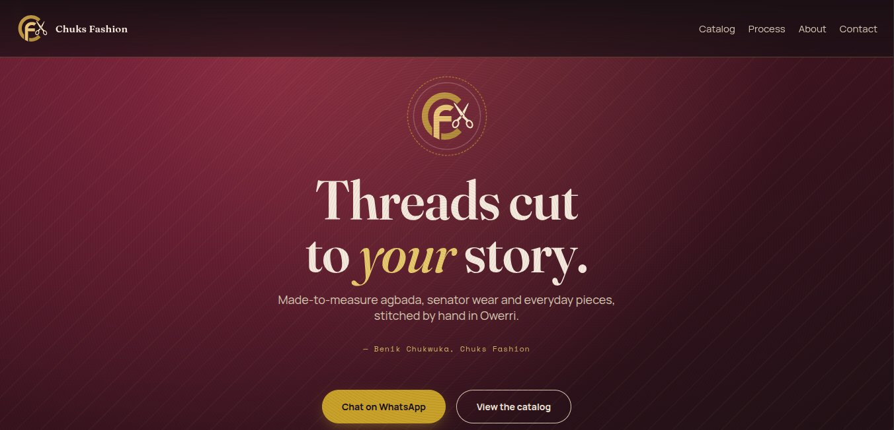
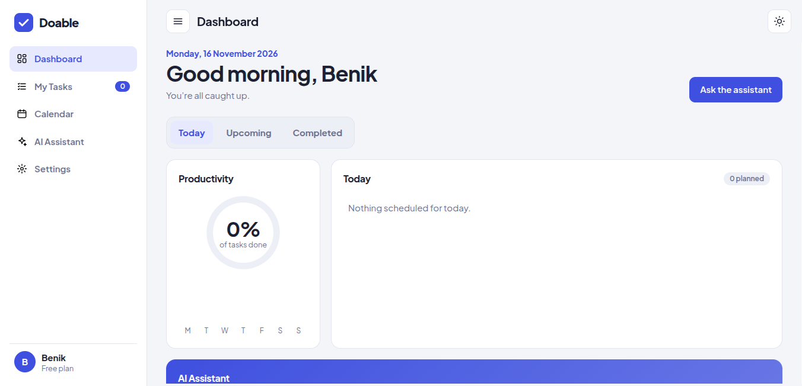
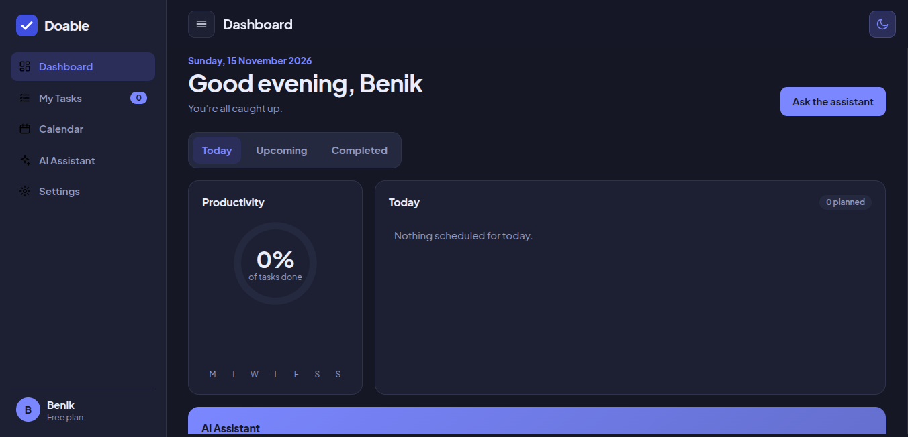
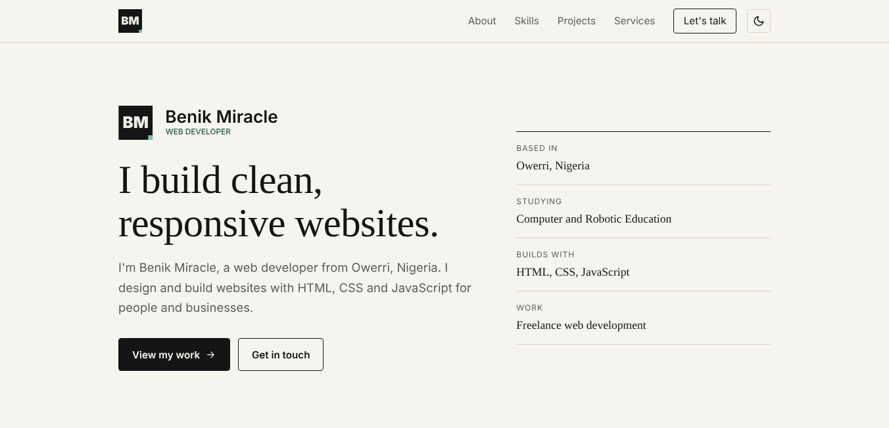
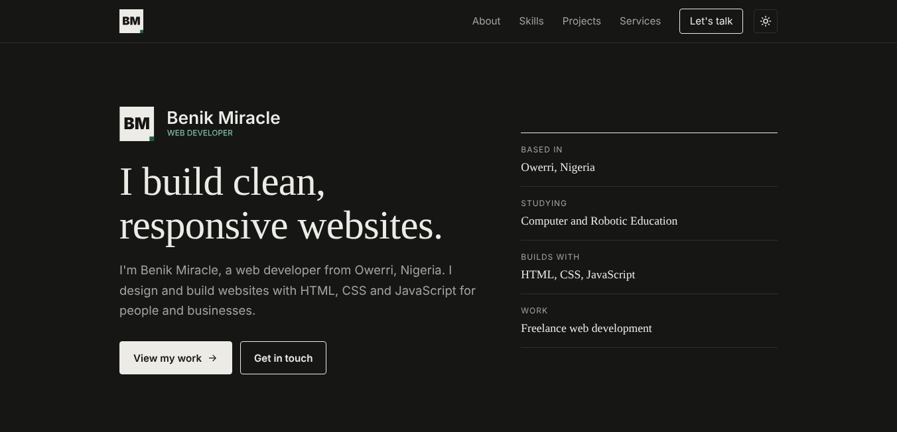

I'm Benik Miracle, a web developer.
I'm Benik Miracle, a web developer from Owerri, Nigeria. I design and build websites with HTML, CSS and JavaScript for people and businesses.
- Based in
- Owerri, Nigeria
- Studying
- Computer and Robotic Education
- Builds with
- HTML, CSS, JavaScript
- Work
- Freelance web development
01 About
I'm a web developer with an interest in building clean, functional and responsive websites. I work with HTML, CSS and JavaScript, with a focus on creating layouts that are simple, accessible and easy to use.
I enjoy bringing ideas to life through code and paying attention to the small details that make a website feel complete. I also continue to explore new technologies and improve my approach to development.
02 Skills
Front end
HTML5, CSS3, JavaScript, responsive layout
Version control
Git and GitHub
Always improving
JavaScript, layout and design skills
03 Projects




04 Services
Website design and build
Websites for businesses and brands, built from scratch with HTML, CSS and JavaScript.
Responsive layouts
Pages that read and work well on phones, tablets and desktops.
Interactive features
Useful JavaScript features, like the task handling in the Todo App.
05 Contact
Have a project in mind, or want to work together? Message me on WhatsApp or send an email.
WhatsApp: +234 704 219 4815
Email: benikmiracle@gmail.com
GitHub: benikmiracle-beep